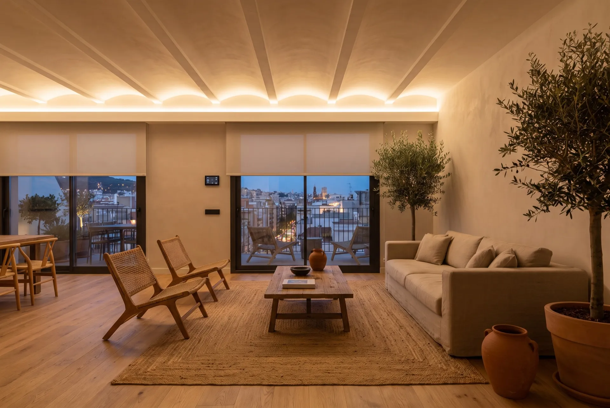
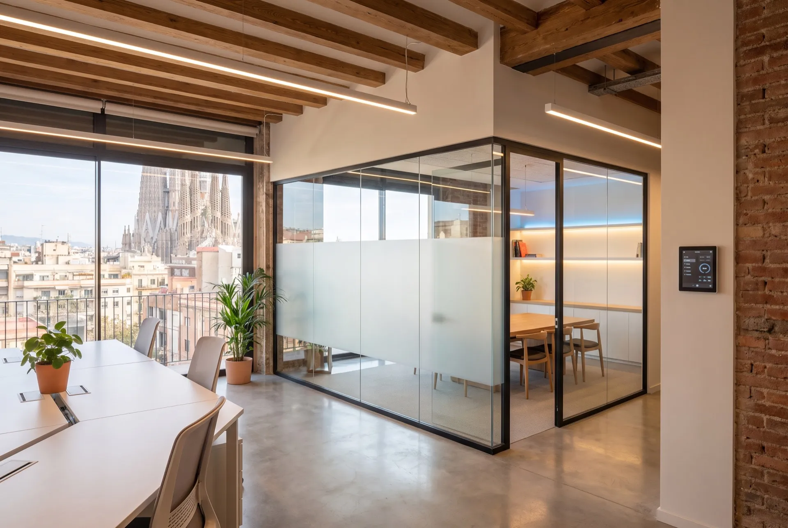
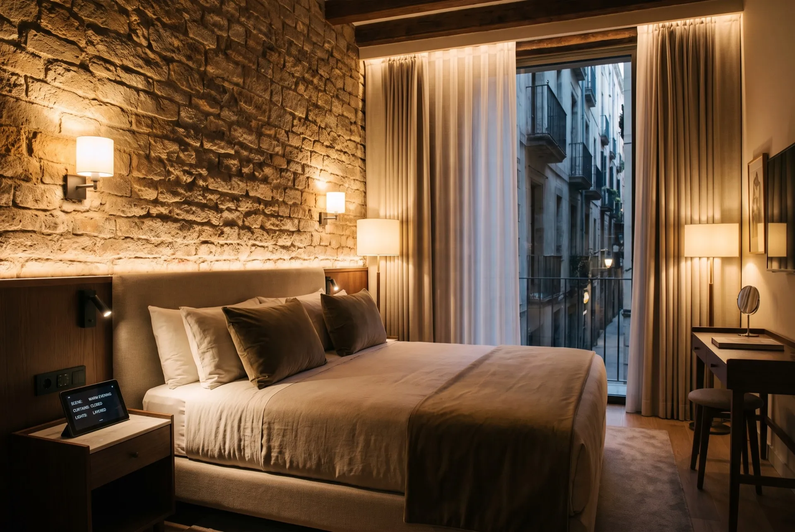
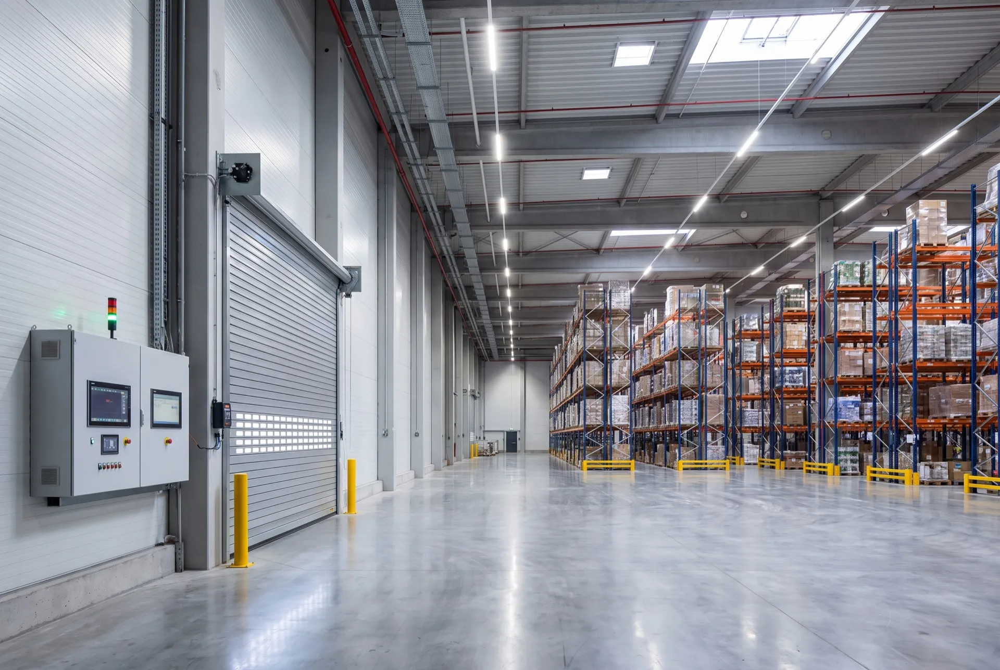

Specialists in smart systems in Sabadell and Vallès Occidental. We transform houses, apartments and businesses with KNX, Loxone technology and wireless installations with no building work. Maximum comfort from day one.
▲ Try it: the controls act on this page
Certified technology for Sabadell and the Vallès
Houses and apartments in Vallès Occidental waste energy, lack automation and don't take advantage of the benefits of modern home automation.
In Sabadell, winter temperatures drop considerably. Without smart climate control, heating runs at the wrong times and the energy bill skyrockets month after month with no control.
Many single-family homes in Sabadell and la Creu Alta rely on traditional locks and basic alarms. There are no real-time alerts or smart access control when you're not home.
Apartments in central Sabadell and buildings from the 1970s lack the wiring needed for home automation. Owners think building work is required, but there are perfect wireless solutions for these cases.
We design tailor-made projects for homes in Vallès Occidental, from apartments in the center to houses in Can Rull or la Creu Alta.
Custom scenes for every room, automatic adjustment based on the natural light in the Vallès, and control from your phone. Ideal for large living rooms and bedrooms in Sabadell houses.
Your home in Sabadell learns your schedule and adjusts the temperature before you arrive. Perfect for Vallès Occidental winters and the area's summers.
IP cameras, motion sensors, smart locks and real-time alerts. Protect your home in Sabadell wherever you are, with systems that work without internet.
Automation with sun and wind sensors for the Vallès climate. Scheduled programming and remote control. Ideal for homes with large windows in Sabadell.
Multiroom sound integrated with Sonos, automated home cinema and centralized control. Enjoy entertainment in every corner of your home in Sabadell.
Real-time monitoring of electricity consumption, integration with solar panels and automatic optimization. Reduce your carbon footprint and your bill in Sabadell.
From family homes in la Creu Alta to businesses in central Sabadell and industrial estates in the Vallès.

Apartments in the center, houses in Can Rull and single-family homes in the Vallès. Home automation with or without building work, adapted to the Sabadell home.
Apartments · Houses · Penthouses · Homes
Offices in Eix Macià, commercial premises downtown and coworking spaces. Automation that reduces operating costs and improves productivity.
Offices · Premises · Coworking spaces
Hotels, restaurants and tourist accommodations in Sabadell and the Vallès. Improve the guest experience with smart rooms.
Hotels · Restaurants · Apartments
Warehouses and industrial estates in Sabadell. Access control, environmental monitoring and automation of production processes.
Warehouses · Storage · LogisticsA proven method across more than 500 projects in the Barcelona metropolitan area.
We visit your home or business in Sabadell, analyze your needs and advise you on the best home automation technology for your case.
We create a customized technical plan, select the optimal devices and give you a fixed quote with no fine print.
Our team of certified installers carries out the project in your Sabadell home with cleanliness, punctuality and minimal disruption.
We train you to use the system and offer permanent technical support. We're just minutes away from anywhere in Sabadell.
Sabadell has many historic buildings. Our wireless technology lets us automate any apartment without breaking into walls or doing renovations.
Technicians trained and certified by leading manufacturers. We guarantee professional installations that meet all European standards.
Free technical visit in Sabadell and a detailed quote. No hidden costs, no surprises. You only pay for what you approve.
Alexa, Google Home, Apple HomeKit, Siri. Your system integrates with the assistants you already use. You're never locked into a single platform.
We're not an outside company. We know Sabadell, its neighborhoods and its buildings. As Domótica Barcelona, we've spent years installing smart systems throughout the metropolitan area and Vallès Occidental.
All our projects in Sabadell include a 3-year warranty on installation and equipment. Technical support included throughout the period.
We operate throughout Sabadell and the main municipalities of Vallès Occidental and the Barcelona metropolitan area.
Local installers in Sabadell and Vallès Occidental. Free travel for quotes throughout the metropolitan area.
📍 Sabadell, Vallès Occidental · Free travel
The trust of families and businesses in Sabadell is our best endorsement.
«They automated our entire house in Can Rull without a single bit of building work. Now we control heating, lights and blinds from our phone. In winter we arrive home already warm. A complete success.»
«We had an old apartment in central Sabadell and thought home automation was impossible. Lumiox installed a wireless system in a single day. Now we have smart lighting and heating control.»
«We set up an office in Eix Macià and needed access control and smart climate control. Lumiox designed the whole system and now we save 30% on energy. True professionals.»
Request your free consultation in Sabadell and discover how home automation can improve your comfort, reduce your bills and increase the security of your home in Vallès Occidental.
Request a free quoteNo obligation · Response in under 24h · Free technical visit in Sabadell